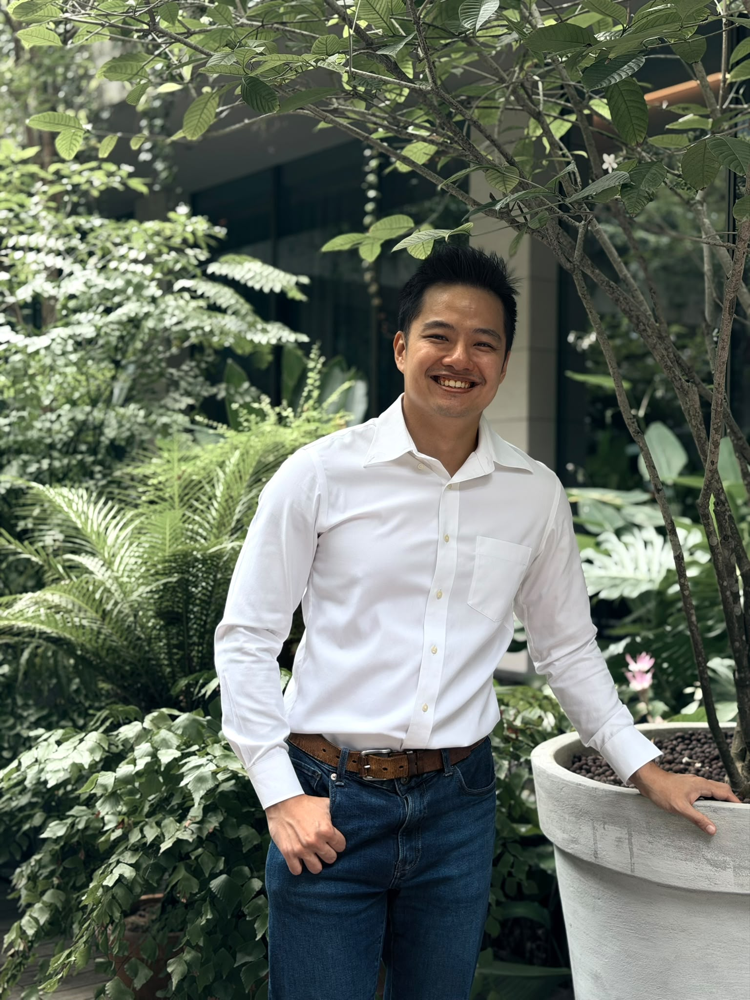

Learning Design · Singapore
L&D Specialist|Instructional Design|Training Operations
Hey there! I'm a learning designer with over six years of experience who specialises in instructional design. My experience involves managing teams in school operations where I am involved in lesson/assessment plan write-ups, student documentation and SkillsFuture applications. I've also been involved in working with stakeholders for eLearning module storyboarding, design and feedback management for more than 100 builds.
I am a supporter of using AI tools to work more efficiently and enjoy working on mobile app development in my free time. I hold ACLP certification from IAL.
